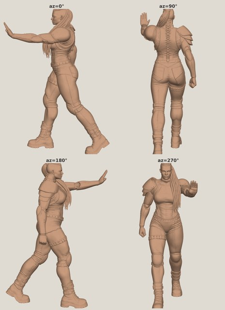
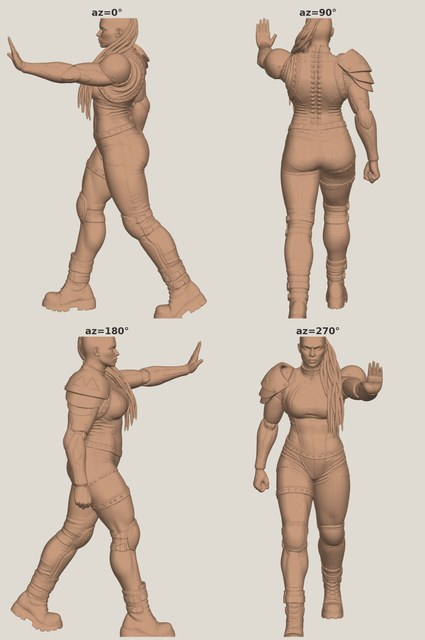
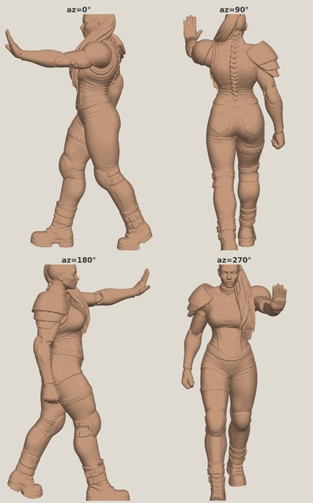
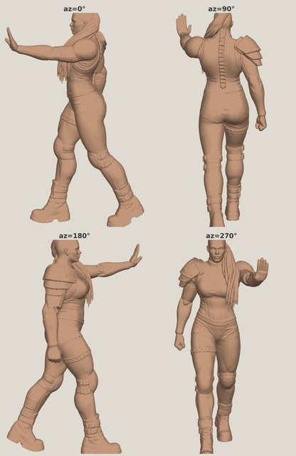

Gorgon — Round 12 (--no-remesh re-run)
📖 Round runbook →Round 12 regenerates the two Round-11 keepers (non-clay gold + r2clay) at Meshy's raw highest-precision --no-remesh setting, instead of the remesh→300k default r10/r11 ran by mistake. Same crops, only the Meshy flag changes — so any quality change is the setting.
Verdicts / info needed
Answer any subset.
- Confirm the print master for the live-3D gate.Dimitri + Jason
Recommended: gorgon-r12-gold-nr-m1 (non-clay, --no-remesh) — fully watertight, smoothest, crisp kit. Raw + clean-37mm STLs on Drive under gorgon/models/round-12/.
- gold --no-remesh (recommended) — watertight, −56% roughness, the clean master.
- r2clay --no-remesh — the clay path at the correct setting (near-watertight).
- Reject + feedback — a defect you spot on the real STL.
- S7.1 un-mirror — still open; settle the flip.Dimitri
All meshes are in the mirrored generation frame; team standard restored by one late horizontal flip (cleanest in the slicer).
--no-remesh re-runs (the fix)
The two Round-11 keepers reconstructed at --no-remesh. Main image = 4-azimuth turnaround; the surface is visibly smoother than the remeshed r11 versions below.


The remeshed r11 baselines (for comparison)
The same two inputs at the remesh→300k default — rougher surface (orange-peel), more non-manifold edges. Compare against the --no-remesh versions above.


Proposed next steps
Step 1 on the master pick.
- Live-3D gate + resin test printon the master pick
Rotate the watertight gold master at 37mm; a resin test print is the real acceptance. Apply the S7.1 flip per your call.
- Head-socket P6 wolf graft fuses on later (head-socket r3)
- Higher-res-input experiment (earmarked)after the master is confirmed
Now that the --no-remesh baseline is clean, test higher native per-view resolution — parked in docs/experiments-backlog.md.